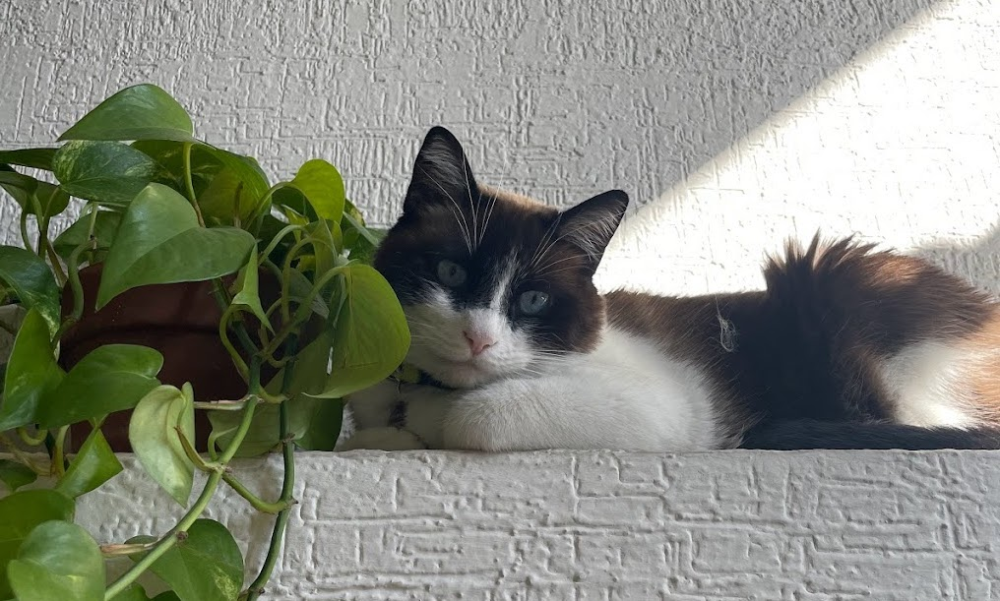
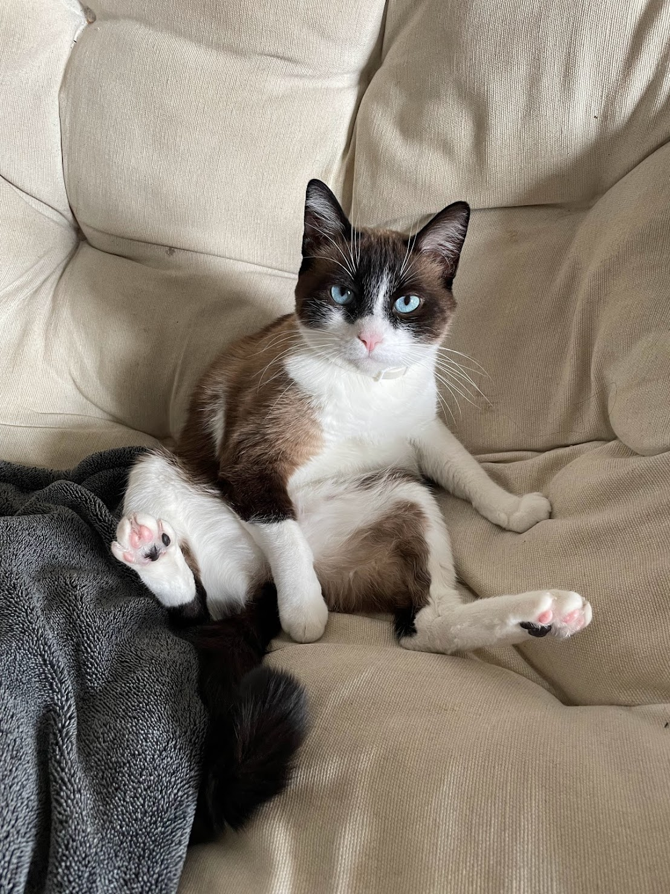
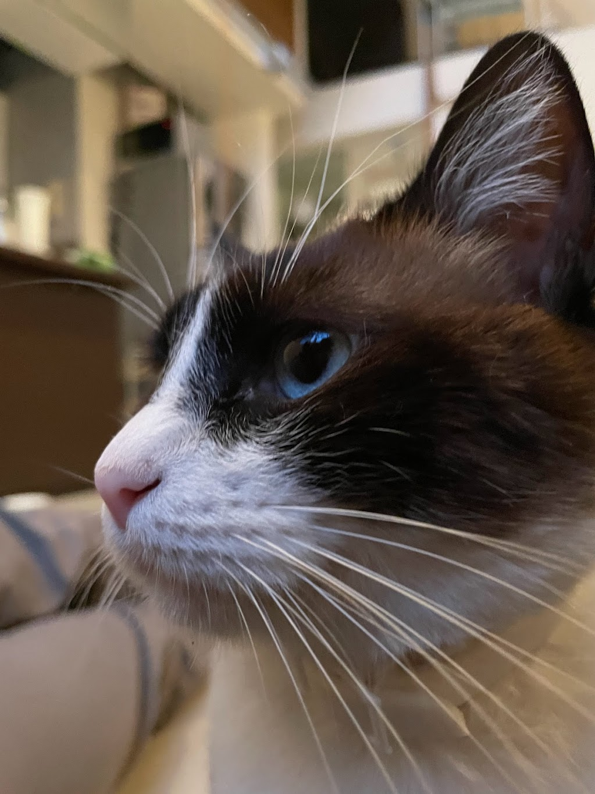
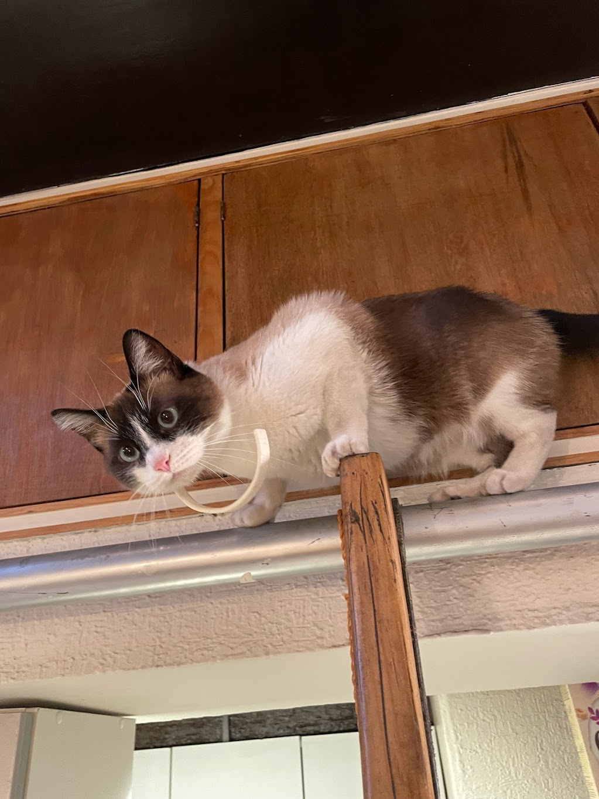
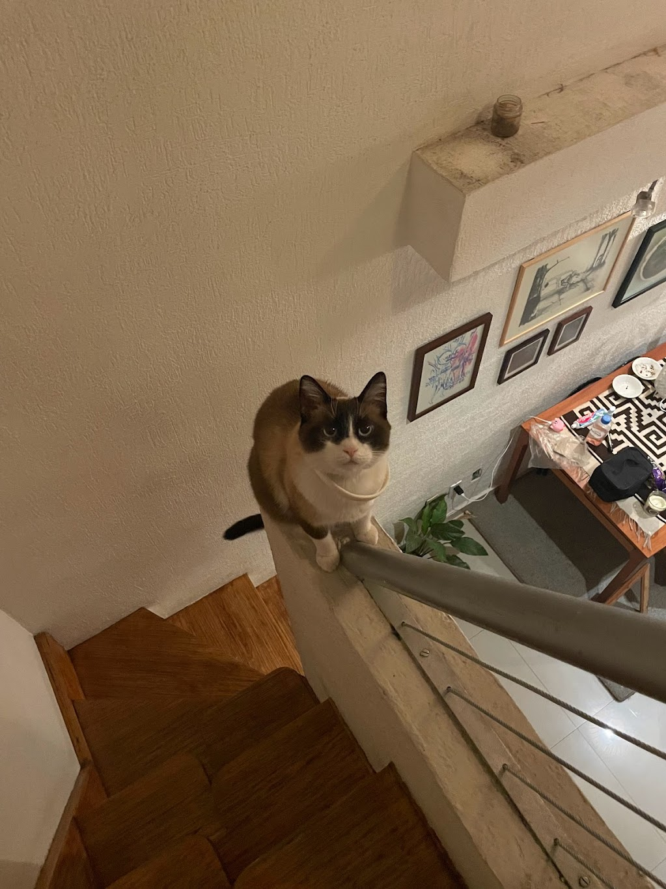

Boji
About
Shop
Contact
Boji's fanpage ˙ᵕ˙
This website has been created for the sole purpose of admiring our lord and saviour Boji.

Now admire his beauty

Listen, kitten, Get this clear, This is my chair. I sit here. Okay, kitty, We can share; When I'm not home, It's your chair.

Come, superb cat, to my amorous heart; Hold back the talons of your paws, Let me gaze into your beautiful eyes Of metal and agate.

When the cat reaches up one needled paw to drag down a book from your desk, then another, that’s not love—that’s dominance.

Tyger Tyger, burning bright, In the forests of the night; What immortal hand or eye, Could frame thy fearful symmetry?
“SOMETIMES I THINK I LOST SOMETHING REALLY IMPORTANT TO ME, AND THEN IT TURNS OUT I ALREADY ATE IT.”
-Boji
Call to action! it's time to elevate!
Sign up for giving your soul to the cult of Boji!